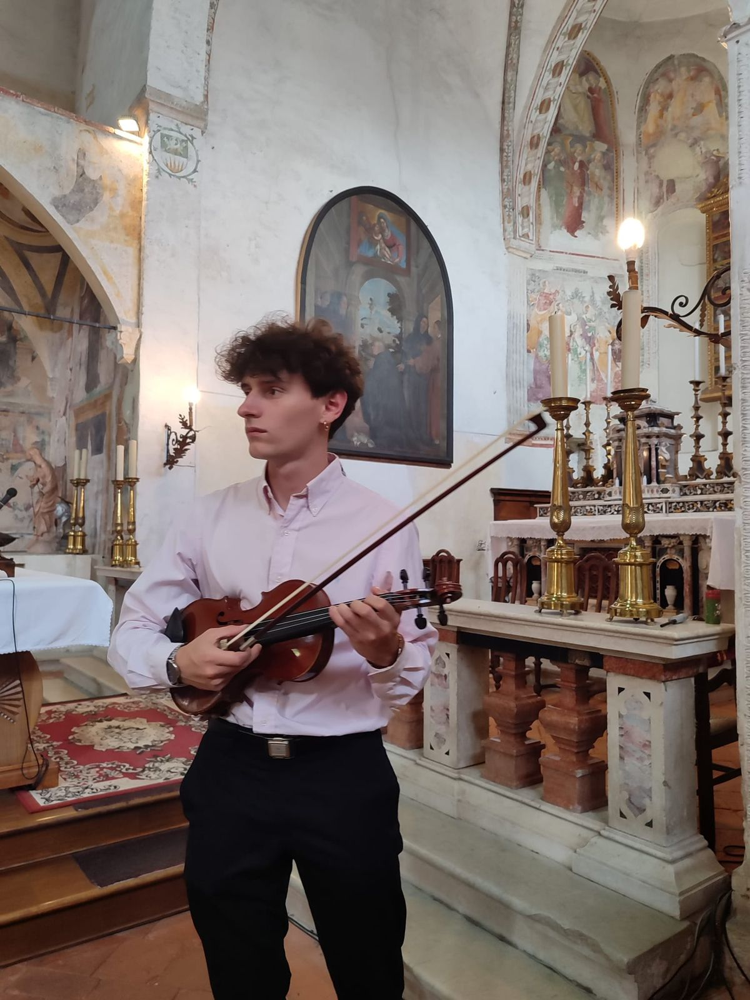
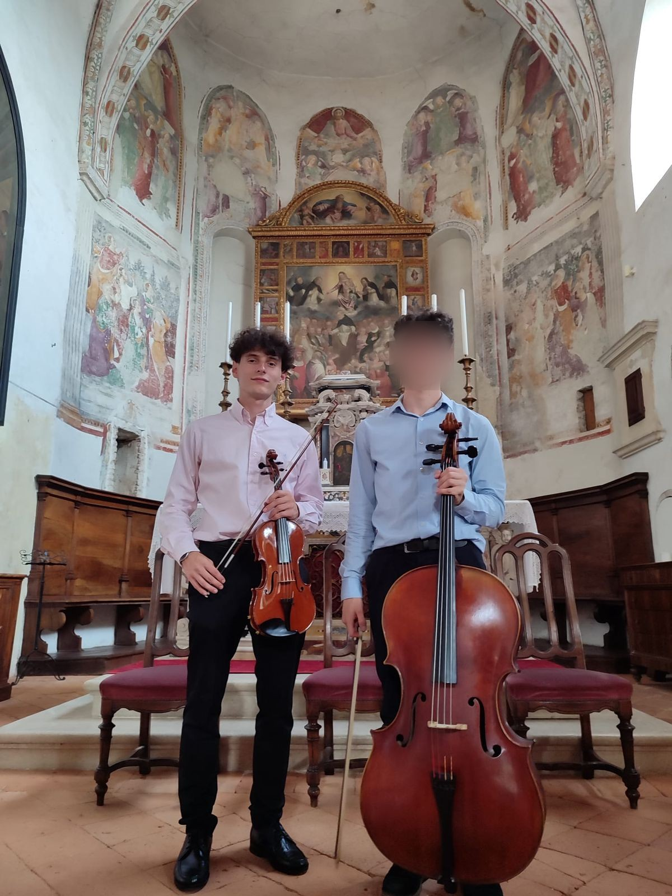
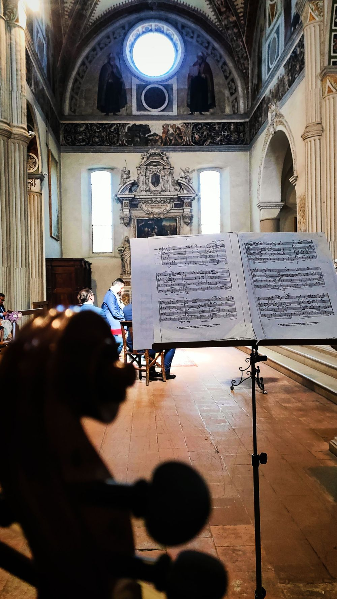
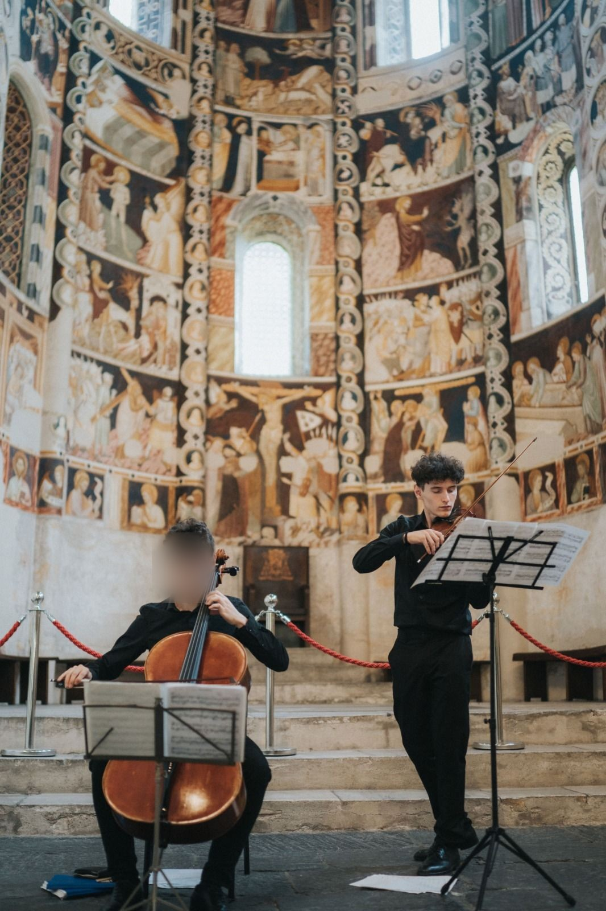
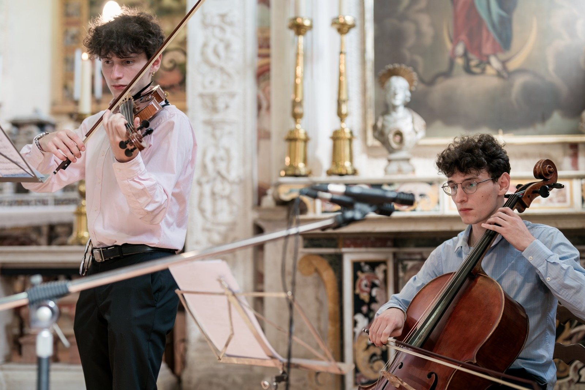
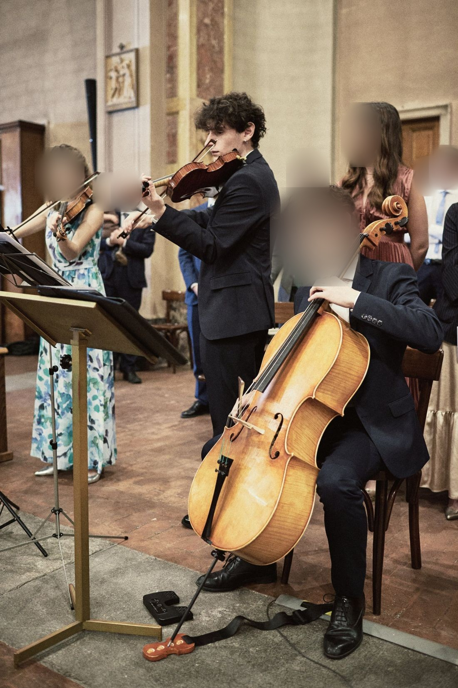

Milano e dintorni
Giovanni Ferrando
Violinista
Musica dal vivo per matrimoni, eventi aziendali e aperitivi.
Violinista a Milano
Mi chiamo Giovanni Ferrando. Ho studiato alla Civica Scuola di Musica Claudio Abbado di Milano con il Maestro Francesco Borali. Suono ai matrimoni, negli eventi aziendali e negli aperitivi, in diverse formazioni.
- Studi
- Civica Scuola di Musica Claudio Abbado, MilanoMaestro Francesco Borali
- Musica per
- Matrimoni, solo cerimonia e/o ricevimento
- Eventi aziendali
- Aperitivi
- Formazioni
- Violino solo
- Violino e pianoforte e/o organo
- Violino e violoncello
- Trio d’archi
- Quartetto d’archi
- Trio con pianoforte e/o organo
- Quartetto con pianoforte e/o organo

Musica dal vivo per ogni occasione
Matrimoni
Solo cerimonia, solo ricevimento oppure entrambi: ingresso degli sposi, scambio degli anelli, aperitivo, cena, primo ballo.
Eventi aziendali
Inaugurazioni, cene, ricevimenti, presentazioni. Un accompagnamento sobrio, che non copre la conversazione.
Aperitivi
Musica dal vivo per aperitivi e cocktail, privati o aziendali.
Formazioni
Violino
- Violino solo con base professionale
- Violino e pianoforte e/o organo
- Violino e violoncello
Archi
- Trio d’archi
- Quartetto d’archi
Archi con tastiera
- Trio con pianoforte e/o organo
- Quartetto con pianoforte e/o organo
Ascolta

Ave Maria
Bach / Gounod, per violino e pianoforte, con Federico Mugnai al pianoforte. Un brano per la cerimonia: ingresso della sposa, scambio degli anelli.
Tutti i video su YouTube


Dal vivo





Dalla richiesta all’evento
Scrivimi
Indicami data, luogo e momenti in cui vuoi la musica. Ricevi un preventivo su misura.
Scegliamo formazione e brani
Definiamo insieme formazione e scaletta, in base al luogo, agli ospiti e ai vostri gusti.
Il giorno dell’evento
Arrivo in anticipo, faccio la prova suono e suono dal vivo.
Prima di scrivermi
Dove suoni?
Milano e dintorni. Per eventi più lontani valuto la trasferta: scrivimi data e luogo.
Quanto costa?
Dipende da formazione, durata, numero di momenti musicali e distanza. Scrivimi data e luogo e ti rispondo con un preventivo su misura.
Quale formazione scegliere?
Dal violino solo al quartetto, anche con pianoforte e/o organo. La scelta dipende da luogo, numero di ospiti e budget: ti consiglio la soluzione più adatta quando mi scrivi.
Suoni anche in chiesa?
Sì. Per la cerimonia in chiesa scegliamo insieme i brani, tenendo conto delle indicazioni del celebrante.
Come funziona la base?
Con il violino solo suono dal vivo sopra una base musicale di qualità, diffusa dal mio impianto audio professionale.
Quanto dura la musica?
Dipende dal momento: cerimonia, aperitivo, cena o festa. Costruiamo set dal vivo alternati a musica di sottofondo, così l’atmosfera non si ferma mai.
Servono spazio e corrente elettrica?
Per il violino solo mi bastano una presa elettrica e un piccolo spazio. Per le altre formazioni ci sentiamo prima per definire spazi e strumenti, pianoforte o organo compresi.
Si può suonare all’aperto?
Sì, purché ci sia un riparo da pioggia e sole diretto: il violino soffre umidità e caldo intenso.
Come richiedo un preventivo?
Scrivimi via email con data, luogo, tipo di evento e momenti in cui vuoi la musica. Ti rispondo con una proposta su misura.
Parliamo della tua data
giovanniferrando.violinista@gmail.com© 2026 Giovanni Ferrando. Milano.